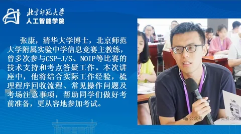
序主讲人介绍
张康
00:24
从共享屏幕的录屏中逐帧还原，按原页序排列（P00 为片头讲师介绍页）；每页标注了它在讲座里被讲到的时刻。点开看大图，可用 ← → 翻页。中段 23 分钟是 NOI Linux 现场演示，不含幻灯片。

序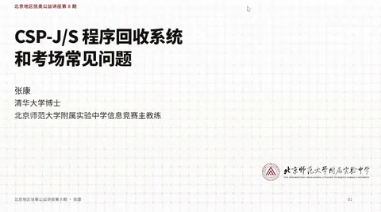
P01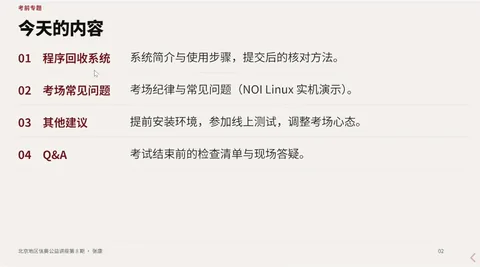
P02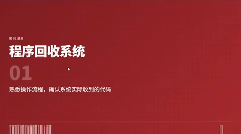
P03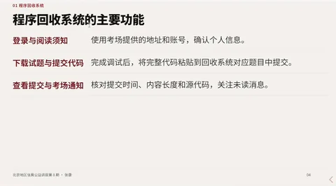
P04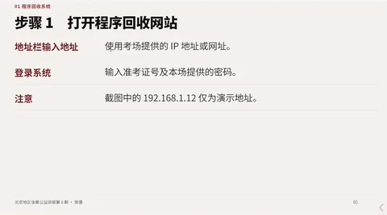
P05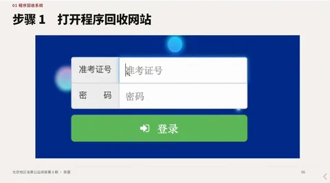
P06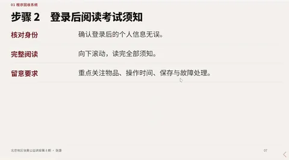
P07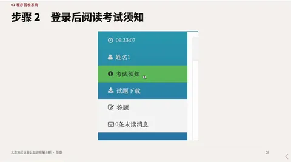
P08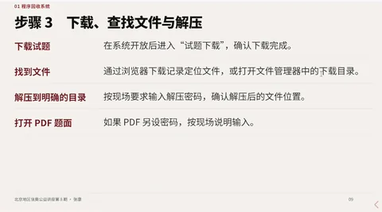
P09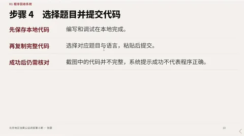
P10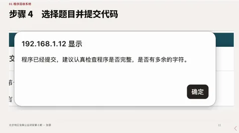
P11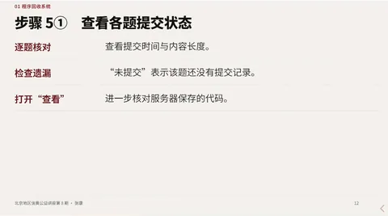
P12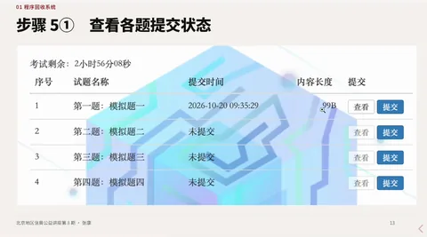
P13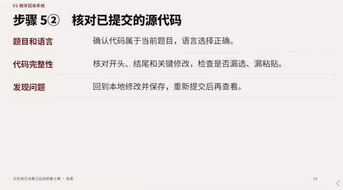
P14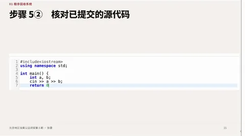
P15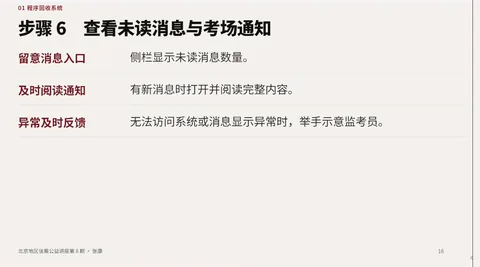
P16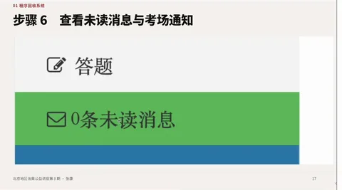
P17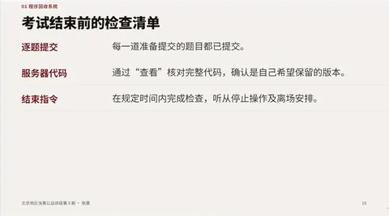
P18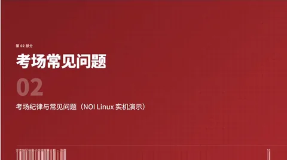
P19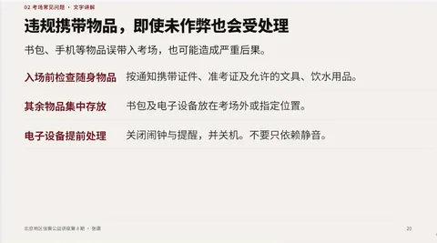
P20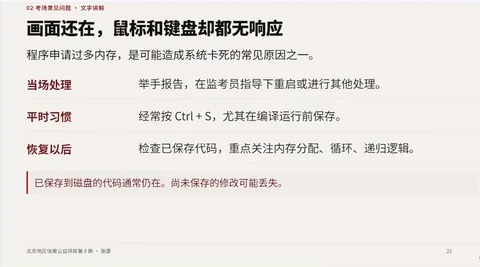
P21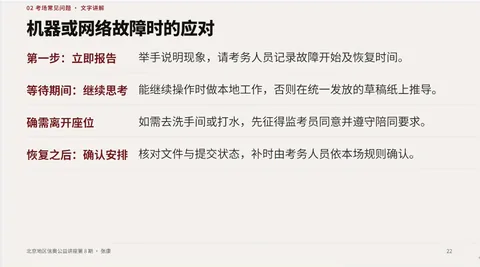
P22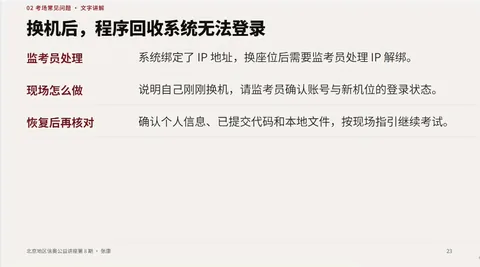
P23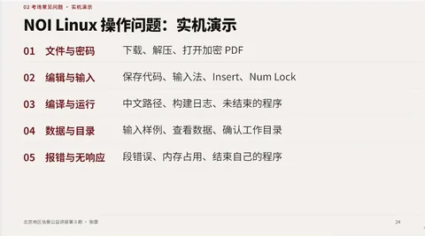
P24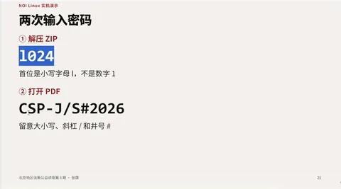
P25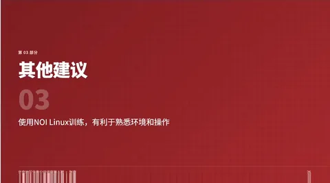
P26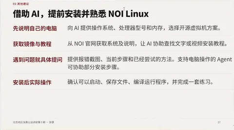
P27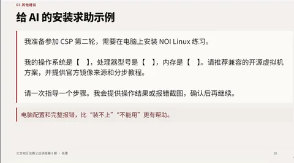
P28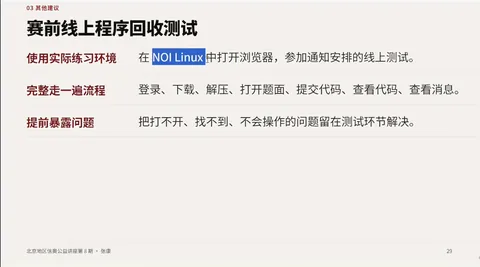
P29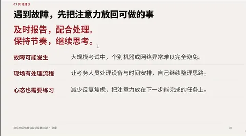
P30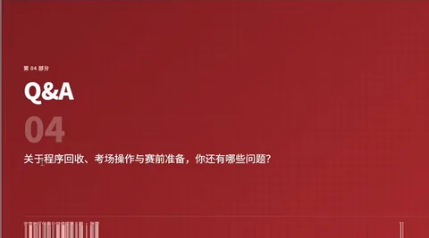
P31基于本地转录整理，术语已逐处对照课件更正；录音含糊处保留标记，不补写。
主讲：张康（清华大学博士，北京师范大学附属实验中学信息竞赛主教练，多次参与 CSP-J/S、NOIP 技术支持与考点答疑）
来源：北京市信息学奥赛系列公益讲座 第九期 ｜ 视频 57:21
整理方式：mlx-whisper 本地转录后人工整理，并逐页比对课件原文校正术语。录音含糊处标 [待核对]，不做补写。
竞赛失利有两类原因：一类是算法不会，另一类是会做但没交上去、或交错了。张康开场就把重点放在第二类：
历年都有选手因操作不规范或突发状况处理不当，导致真实水平未能如实反映在测评结果中。
整场讲座只讲考场实操：程序回收系统怎么用、机器卡死怎么办、编译为什么过不了。技术细节都不难，难在考场上没时间现场摸索。
先纠正一个最常见的误解：
程序回收系统不是评测系统，它不编译代码。 代码有编译错误它不会提醒你，它的作用只是把你的代码文本收集上来。
所以「本地能跑」和「回收系统里有正确版本」是两件必须分别确认的事。
192.168.1.12），开考前进场时看黑板板书。登录后侧栏有「考场须知」，等同纸质考试要求。开考前逐条读一遍，发现自己有不合规的地方还来得及改。
考试结束前 15 分钟和 5 分钟监考员都会提醒。张康的建议很直接：
最后 5 分钟已经很难再改代码了，不如把已提交的题目逐个核对一遍。
必须形成的一个观念：
你保存在自己编辑器里、自己电脑上的代码都不算数，只有提交到回收系统里的那一份才是你真正的答卷。
最常见的情形不是作弊，而是习惯：开考后书包、手机还在座位上。手机响了或被监考员发现，按考试要求即构成违纪，当場考试可被记零。
建议：开考前把物品按考场要求放好，电子设备该关机的关机。
最常见成因是自己写的程序申请了过多内存，把整台机器拖死。少数情况是机器连续工作三四小时后自身卡住。
处理要点：
一个考场几百上千台机器连续工作几小时，偶发故障难免。真正影响考试的往往不是故障本身，而是选手在等待时的急躁。
换机后监考员需要同步修改准考证号绑定的 IP，这中间有时间差。等监考员通知后再登录，座位不能随意更换。
这也是「做一题提交一题」的理由：换机后旧机器上的代码大概率拿不过来，而回收系统在服务器上。
这一段是全场最实用的部分，张康用 NOI Linux 实机演示了每一个故障。课件把它们归为五类，实际讲到了十一项：
.in / .answer 大文件导致死机去年 CSP 某题的数据包里有 17.8 MB 的输入文件（约 1700 万个数），用文本编辑器打开，滚动条直接忙不过来，性能差一点的机器当场卡死。
head / tail。一般是自己的程序死循环或无限递归。可以直接关掉，不必紧张。
见上一节第 2 条。注意归因：如果是自己程序导致的，相应后果也要自己承担。
等价于评测网站上的「运行错误」。常见原因：数组下标越界、指针写错、栈里放的东西太多、无限递归。
| 原因 | 表现 | 处理 |
|---|---|---|
| 保存在中文目录 | Code::Blocks 存到「桌面」等中文路径，之后无法编译 | 养成习惯：不要在中文目录下写代码 |
| 数组开得太大 | 如 const int N = 1e9 + 5;，链接阶段报 .bss 段 / PC32 against .bss |
全局数组超过限制会连编译都过不了，不是机器坏 |
| 同名目录冲突 | hello.cpp 生成可执行文件 hello，而目录下已有 hello/ 文件夹 |
改名或删掉同名目录，较少见 |
| 程序还在运行 | 上一次运行的黑窗口没关，重新编译覆盖不了可执行文件 | 关掉多余运行窗口再编译 |
第二种在考场上最容易误判成「机器有问题」，去年就有不少同学因此举手。
机房显示器能承载的输出分辨率有限，改大或改错可能导致整个系统显示不出来。修得回来，但代价是大量时间，而且算你自己的操作。
觉得字不舒服，用 Ctrl + 滚轮调字体（Code::Blocks 等编辑器都支持），比改分辨率安全得多。
光标变成方块/黑色竖线，新输入的字符把后面的字吃掉。按一下 Insert（键盘上常标 Ins）即可恢复。自己观察就能解决，不必举手等监考员。
NumLock 没开，或键盘上根本没有这个键。写代码主要用主键盘区那排数字，影响不大。
题目要求读 road.in，而给你的是 road1.in、road2.in 样例；更常见的是 .in 文件和可执行文件不在同一目录——程序只在当前目录找。
处理：把输入文件复制（或移动）到可执行文件所在目录，再运行。
主目录 → 「下载」（Downloads）。和第 3 步同一件事，但考场上问得最多。
误点了菜单，把工具栏切到 minimal 布局，看起来「什么都没有了」，其实代码还在。
恢复：
View → Perspectives → Default，弹出「是否保存」时选 No。常用按钮和快捷键会全部回来。
NOI Linux 在官网可以下载。用官方环境训练，本身就是在练考场操作。
张康的立场很务实：写过一段时间代码之后，装个虚拟机不该是难事，敢试就行。而今年更省事的办法是让 AI 带你装：
主办方提供赛前线上测试（今年安排在下周四 [待核对]）。建议完整走一遍：登录 → 下载 → 解压 → 提交 → 查看。
在测试里把不熟练的地方暴露出来，赛场上就不会碰到「奇怪的问题」。
Q1：第一次参赛，平时在 Windows 下编程，最后几天该继续刷题还是熟悉系统？
熟悉系统。多刷几道题当然有训练价值，但对从没用过 NOI Linux 的同学，熟悉系统带来的收益更大——它直接决定你在考场上的操作是否流畅。他打的比方：换了新球拍，赛前几天总得先适应这块拍子。
Q2：有哪些往年选手常犯、但可以提前避免的失误？
Q3：freopen 要不要写？
看题目。 真题第一页的表格会写明是「标准输入」还是「文件输入」。写了「文件输入」就必须 freopen，让程序从文件读数据。题目一定会说明输入方式，否则没法评测。
Q4：（主持人的补充提示）
程序回收系统仅针对北京市选手，外地选手请按本省要求提交代码。
赛前一周
Ctrl+S 保存、Ctrl+滚轮 调字号、Insert 切换覆盖模式进场到开考前
开考后
head 看前几行结束前 15 分钟 / 5 分钟
| 位置 | 现状 | 说明 |
|---|---|---|
| 讲座期数 | 标题为第九期，主讲人开场说「已经办到第八期」，课件页脚也写「第 8 期」 | 课件母版未更新，以官方发布为准 |
| 赛前线上测试日期 | 录音作「下周四」 | 具体日期未在课件中出现，需以主办方通知为准 |
| 程序回收系统地址 | 演示用 192.168.1.12 |
各考场不同，以黑板板书为准 |
| 压缩包 / PDF 密码 | l024、CSP-J/S#2026 |
为讲座演示用示例，考场密码以现场为准 |
| 「段错误」提示原文 | 录音作「断错误核心已转处」 | 应为「段错误（核心已转储）」，已按术语改写 |
| Code::Blocks 菜单路径 | 录音作「will → perspective → default」 | 应为 View → Perspectives → Default |
| AI 工具举例 | 录音作「豆包工作」「workbody」 | 按语义写作豆包、WorkBuddy，原话未逐字确认 |
本稿由录音转录整理，术语已对照课件页面逐处校正；课件 31 页另有图集，见站点「课件」栏。
课件为录屏逐帧还原（1220×678），不是原始 PDF；如需精确排版请以现场为准。